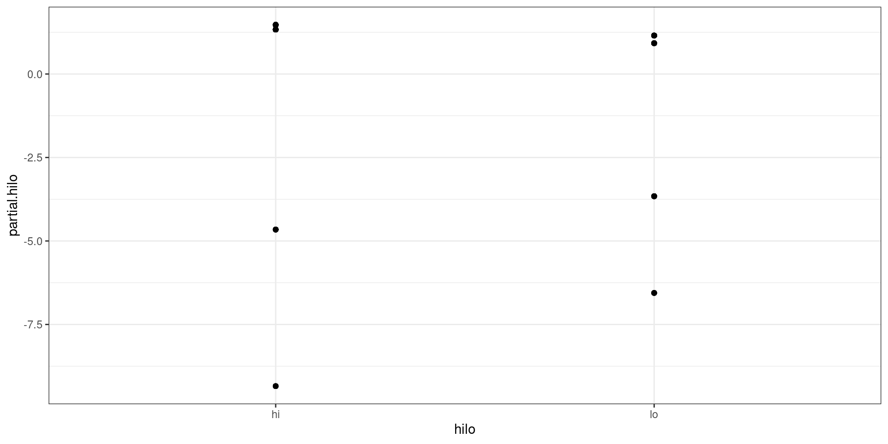

bin_model <- bacteria %$% glm(y ~ ap + hilo,
family = binomial(link = "logit"))Generalized Linear Models
Residual Analysis
Learning Outcomes
Model Diagnostics
Residuals
Residual Analysis
Model Selection
Model Diagnostics
Assumptions
Linearity
Correct Distribution
Random Component
Link Function
Dispersion parameter constant
Independence
No Outliers
Residuals
Raw Residuals
\[ r = y - \hat \mu \]
- \(\hat \mu\): fitted value
Working Responses
\[ z_i = \hat \eta_i + \frac{d\eta_i}{d\mu_i}(y_i-\hat\mu_i) \]
Partial Residuals
\[ u_{ij} = e_i + \hat\beta_j x_{ij} \]
- \(e_i = z_i - \hat \eta_i\)
Pearson Residuals
\[ r^* = \frac{y-\hat \mu}{\sqrt{V(\hat\mu)}} \]
\(\hat\mu\): fitted value
\(V(\mu)\): variance function
Deviance Residuals
\[ r^\prime = \mathrm{sign}(y-\hat\mu)\sqrt{d(y,\hat\mu)} \]
\(d(y,\mu)=2\left\{t(y,y) - t(y,\mu)\right\}\)
\(t(y, \mu)=y\theta - \kappa(\theta)\)
Quantile Residuals
\[ r^+ = \Phi^{-1}\left\{F(y;\hat\mu,\phi)\right\} \]
\(\Phi^{-1}\): Inverse CDF of Standard Normal Distribution
\(F(\cdot)\): CDF of random variable \(y\)
Leverages
\[ H = W^{1/2} X(X^{\mathrm T}X)^{-1}X^{\mathrm T}W^{1/2} \]
\(X\): Design Matrix
\(W = \mathrm{diag}(W_1, \cdots, W_n)\)
\(W_i = \frac{(d\mu_i/d\eta_i)^2}{V(\hat\mu_i)}\)
\(h_i\): diagonal element of \(H\) is the the leverage for observation \(i\)
Standardized Residuals
\[ r^*_s = \frac{y -\hat \mu}{\sqrt{\hat\phi V(\hat\mu)(1-h)}} \]
\[ r^\prime_s = \frac{\mathrm{sign}(y-\hat\mu)\sqrt{d(y,\hat\mu)}}{\sqrt{\hat\phi(1-h)}} \]
Cook’s Distance
\[ D \approx\frac{(r^*_s)^2}{p^\prime}\frac{h}{1-h} \]
- \(p^\prime\): number of predictors plus one
Residual Analysis
Residual Plots
Residual plots are used to test both the systematic and random component of the model
It can also be used to identify potential outliers in the data.
Fitting a Model
Residual Plot Data Frame
library(statmod)
1resid_df <- data.frame(obs = 1:nrow(bin_model$model),
2 bin_model$model,
3 fitted = fitted(bin_model),
4 eta = bin_model$linear.predictors,
5 raw = resid(bin_model, type = "response"),
6 pearson = resid(bin_model, type = "pearson"),
7 deviance = resid(bin_model),
working = resid(bin_model, type = "working") +
8 bin_model$linear.predictors,
9 partial = resid(bin_model, type = "partial"),
std_pear = rstandard(bin_model,
10 type = "pearson"),
11 std_dev = rstandard(bin_model),
12 stud_dev = rstudent(bin_model),
13 qresid = qresid(bin_model),
14 leverages = hatvalues(bin_model),
15 cooks = cooks.distance(bin_model))- 1
- Index
- 2
- Data to fit model
- 3
- \(\hat \mu\)
- 4
- \(\hat \eta\)
- 5
- Raw Residual
- 6
- Pearson Residual
- 7
- Deviance Residual
- 8
- Working Responses
- 9
- Partial Values: each individual X
- 10
- Standardized Pearson Residuals
- 11
- Standardized Deviance Residuals
- 12
- Studentized Deviance Residuals
- 13
- Quantile Residuals
- 14
- Leverages
- 15
- Cook’s Distance
Residuals vs Fitted
library(ggplot2)
ggplot(resid_df, aes(x = fitted, y = deviance)) + geom_point() +
stat_smooth() +
theme_bw()Working Responses vs \(\hat\eta\)
ggplot(resid_df, aes(x = eta, y = working)) + geom_point() +
stat_smooth() +
theme_bw()
Partial Residuals vs X
ggplot(resid_df, aes(ap, partial.ap)) + geom_point() +
stat_smooth() +
theme_bw()ggplot(resid_df, aes(hilo, partial.hilo)) + geom_point() +
stat_smooth() +
theme_bw()
QQ Plot of Quantile Residuals
ggplot(resid_df, aes(sample = qresid)) + stat_qq() +
stat_qq_line() +
theme_bw()Leverages Plot
ggplot(resid_df, aes(obs, leverages)) + geom_point() +
theme_bw()Cook’s Distance Plot
ggplot(resid_df, aes(obs, cooks)) + geom_point() +
theme_bw()Model Selection
AIC
\[ \mathrm{AIC} = -2\ell(\hat{\boldsymbol\beta},\hat\phi,y) + 2 p^{\prime} \]
\(\ell(\cdot)\): log-likelihood function
\(p^\prime\): number of predictors plus one
Lower is better
BIC
\[ \mathrm{BIC} = -2\ell(\hat{\boldsymbol\beta}, \hat \phi, y) + \log (n) (p^\prime+1) \]
\(\ell(\cdot)\): log-likelihood function
\(p^\prime\): number of predictors plus one
Lower is better